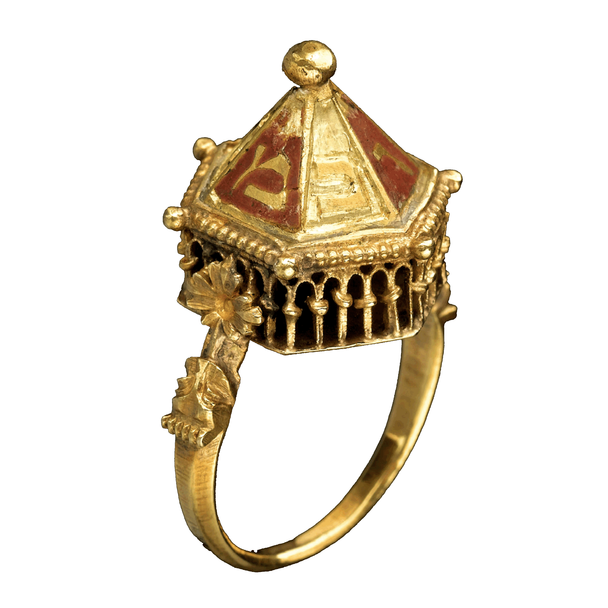

The Colmar
Treasure:
A Medieval
Jewish Legacy
JULY 22, 2019 – JANUARY 12, 2020
EXHIBITION
OVERVIEW
A cache of jeweled rings, brooches, and coins—the precious possessions of a Jewish family of medieval Alsace—was hidden in the fourteenth century in the wall of a house in Colmar, France. Discovered in 1863 and on view in an exhibition at The Met Cloisters, the Colmar Treasure revives the memory of a once-thriving Jewish community that was scapegoated and put to death when the Plague struck the region with devastating ferocity in 1348–49
A generous loan of the Musée de Cluny, Paris, the Colmar Treasure is displayed alongside select works from The Met Cloisters and little-known Judaica from collections in the United States and France. Although the objects on view are small in scale and relatively few in number, the ensemble overturns conventional notions of medieval Europe as a monolithic Christian society. The exhibition points to both legacy and loss, underscoring the prominence of the Jewish minority community in the tumultuous fourteenth century and the perils it faced.